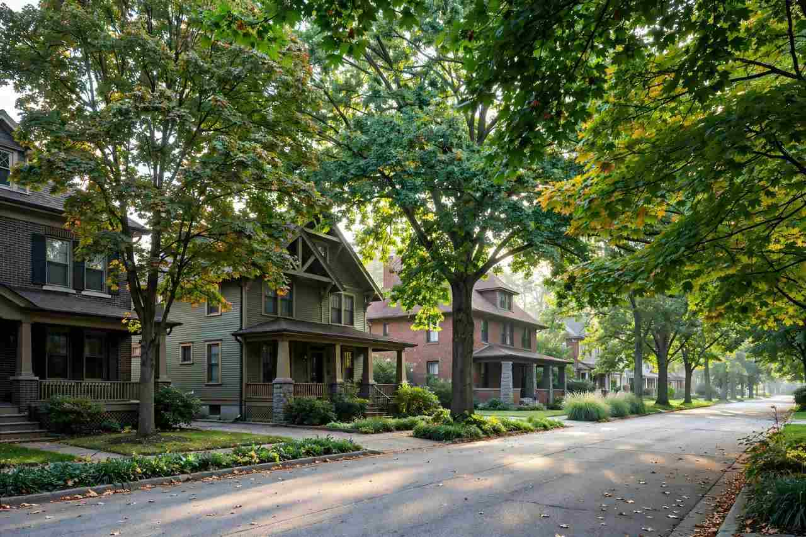

Rodent Control · Tuscarawas, OH
Same-Day Rodent Control in Tuscarawas, OH
If rodents have moved into your Tuscarawas home or business, Murvo can help today. Our local, licensed crews provide same-day inspection, targeted removal, durable exclusion, and cleanup, all under one flat-rate written quote with a written guarantee. No hourly billing and no surprise add-ons, just rodent specialists serving Tuscarawas and communities throughout Tuscarawas County every day of the week. Local crews cover 3 ZIP codes in the Tuscarawas area, from Midvale to the far side of Tuscarawas County.
24/7Availability
3ZIP codes covered
Same-dayResponse
Licensed · Upfront options · Written guarantees · Fully insured
Tuscarawas at a glance
Local Rodent Control for Tuscarawas, OH.
Tuscarawas County
Countyeastern Ohio
RegionCanton · 29 mi
Nearest metro90 miles east of Columbus
From Columbus3
ZIP codes covered Service by service in Tuscarawas
Rodent Control Services Available in Tuscarawas
Rodent-only specialists serving Tuscarawas and Tuscarawas County. Every service below is explained in local terms - the species involved, the entry points that matter in vintage duplexes and stone homes, brick bungalows, older single-family homes, and farm and rural properties, and the seasonal timing that decides whether a fix lasts.
- 01Rodent Control↗
- 02Rodent Inspection↗
- 03Rodent Removal↗
- 04Rodent Exclusion↗
- 05Rodent Proofing↗
- 06Rat Control↗
- 07Mice Control↗
- 08Mouse Removal↗
- 09Rat Removal↗
- 10Rodent Trapping↗
- 11Rodent Baiting↗
- 12Rodenticide Application↗
- 13Attic Rodent Removal↗
- 14Crawl Space Rodent Removal↗
- 15Wall Rodent Removal↗
- 16Kitchen Rodent Control↗
- 17Garage Rodent Control↗
- 18Commercial Rodent Control↗
- 19Residential Rodent Control↗
- 20Emergency Rodent Removal↗
- 21Same-Day Rodent Control↗
- 22Rodent Damage Repair↗
- 23Rodent Waste Cleanup↗
- 24Rodent Disinfection↗
- 25Rodent Odor Removal↗
- 26Dead Rodent Removal↗
- 27Rodent Dropping Cleanup↗
- 28Rodent Exclusion for Roofs↗
- 29Rodent Exclusion for Vents↗
- 30Rodent Exclusion for Chimneys↗
Rodent Control in Tuscarawas
Rodent Control in Tuscarawas
A single mouse sighting in a Tuscarawas kitchen rarely means a single mouse. Rodents breed fast, contaminate food areas, and gnaw wiring long before the damage is obvious. Murvo responds with same-day appointments where available, a background-checked local crew, and a coordinated program of trapping, exclusion, cleanup guidance, and monitoring that keeps working after the first visit ends.
In Tuscarawas, rodent control is not a generic spray-and-go service. Rodents exploit basement foundations, alley-facing garage doors, sewer laterals, and gaps around utility lines and sills in vintage duplexes and stone homes, brick bungalows, older single-family homes, and farm and rural properties, and a fix that ignores those routes does not last. Murvo's Tuscarawas team inspects first, shows you the evidence - droppings, gnaw marks, entry gaps - and then lays out the work with a flat-rate written quote. We serve all of Tuscarawas County from Tuscarawas, including Uhrichsville, Gnadenhutten, and every job is covered by our written workmanship guarantee. Homes near Midvale tend to show activity first in Tuscarawas, which is why inspections start with basement foundations, alley-facing garage doors, sewer laterals, and gaps around utility lines and sills.
Consider how a visit unfolds. The technician walks the exterior before touching anything indoors, noting gaps, rub marks, and food sources. Inside, attic and crawl-space evidence shapes the trapping plan, which is adjusted visit by visit as numbers change. Cleanup guidance covers contaminated areas safely, and exclusion work closes the route permanently. Throughout, photographs and written notes keep you informed, so progress is something you can see and verify rather than something you are asked to trust. Photographs taken at the start make those later comparisons honest, because memory alone tends to blur the details.
Booking takes one call, and same-day appointments are available in most Tuscarawas areas. At the final visit we walk the finished work together and confirm monitoring is clear. Your technician inspects first, talks you through the plan in plain language, and only starts once you approve the written quote. Work is carried out in stages, with trap checks and sealing visits booked ahead. Questions are answered at every stage, day or night.
In most of Tuscarawas, we can offer a same-day appointment for rodent control, and our lines are open 24/7 for urgent cases like scratching in the walls or a rodent in a living area. Your technician inspects first, explains the plan, and quotes a flat rate in writing before any work begins, so help starts fast without surprises. A Tuscarawas inspection confirms it on site - dropping size, gnaw marks, and entry points tell the story quickly.
The honest answer is that it depends on species, activity level, and how much sealing your home needs, which is why Murvo inspects first and then gives you a flat-rate quote in writing. For national context only, Angi's 2026 data averages rat and mouse removal and control at $396, typically $189 to $655; that is not a Murvo price, and your written quote is the figure you pay.
Rodent Inspection in Tuscarawas
Rodent Inspection in Tuscarawas
In Tuscarawas County, vintage duplexes and stone homes, brick bungalows, older single-family homes, and farm and rural properties often hide entry gaps that stay invisible from ground level: lifted shingles, unsealed pipe penetrations, and garage door corners where Norway rat (Rattus norvegicus) and House mouse (Mus musculus) slip through. A Murvo rodent inspection covers the roofline, foundation, attic, and crawl space in one visit, so you learn exactly where rodents get in and what closing each gap involves.
Homeowners in Tuscarawas call Murvo for rodent inspection because the problem here is specific: Norway rat (Rattus norvegicus) pressure around vintage duplexes and stone homes, brick bungalows, older single-family homes, and farm and rural properties, tight access at basement foundations, alley-facing garage doors, sewer laterals, and gaps around utility lines and sills, and activity that follows the local season. Our Tuscarawas County crews diagnose the real source before recommending work, explain the options in plain language, and quote one flat rate in writing. Across Tuscarawas - including Uhrichsville, Gnadenhutten - every visit is backed by licensed, insured technicians and our written workmanship guarantee. Homes near Midvale tend to show activity first in Tuscarawas, which is why inspections start with basement foundations, alley-facing garage doors, sewer laterals, and gaps around utility lines and sills.
Think of the inspection as three passes. The interior pass covers attic insulation, crawl-space corners, and kitchen voids for droppings, nests, and gnawing. The review pass brings it together: species, likely numbers, contamination, and the order in which fixes should happen. Each pass is photographed, and nothing is recommended without evidence from one of those passes to support it. The exterior pass checks siding, vents, pipe entries, and roof junctions for gaps and rub marks. The report separates what rodents are doing now from what the structure merely allows them to do later.
Booking a rodent inspection in Tuscarawas takes one call, and same-day appointments are often available. Nothing proceeds without your approval, and urgent items are clearly flagged. Your technician arrives on time, walks the property with you, and inspects the attic, crawl space, and exterior in one visit. Findings are explained with photos before you receive a flat-rate written quote for any recommended work. You keep the full written report either way.
Inspections are the fastest way we help in Tuscarawas: same-day appointments are available in most areas, and urgent calls are answered 24/7. A typical rodent inspection takes under an hour for most homes, and you leave the visit with photos, written findings, and a flat-rate quote for any work we recommend, so decisions never wait on us. A Tuscarawas inspection confirms it on site - dropping size, gnaw marks, and entry points tell the story quickly.
Nationally, a professional rodent inspection typically runs $100 to $200 according to Angi's 2026 data, and it is often credited toward the job if you proceed. Murvo confirms your exact rodent inspection price before the visit and quotes any follow-up work as a flat rate in writing after inspection, so the figure you approve is the figure you pay, with no hourly billing.
Rodent Removal in Tuscarawas
Rodent Removal in Tuscarawas
Finding droppings in the kitchen or hearing scratching overhead in Tuscarawas means rodents are already living indoors, and they will not leave on their own. Murvo's rodent removal clears active Norway rat (Rattus norvegicus) and House mouse (Mus musculus) with targeted trapping, removes animals hygienically, and closes the entry points behind them. One flat-rate written quote covers the program before work begins.
In Tuscarawas, rodent removal is not a generic spray-and-go service. Rodents exploit basement foundations, alley-facing garage doors, sewer laterals, and gaps around utility lines and sills in vintage duplexes and stone homes, brick bungalows, older single-family homes, and farm and rural properties, and a fix that ignores those routes does not last. Murvo's Tuscarawas team inspects first, shows you the evidence - droppings, gnaw marks, entry gaps - and then lays out the work with a flat-rate written quote. We serve all of Tuscarawas County from Tuscarawas, including Uhrichsville, Gnadenhutten, and every job is covered by our written workmanship guarantee. Around Midvale, Dennison, Barnhill, the pattern is similar: House mouse (Mus musculus) finds basement foundations, alley-facing garage doors, sewer laterals, and gaps around utility lines and sills first, and lasting rodent removal has to close those routes.
Removal here is measured in records, not impressions. Sealing recommendations follow immediately, because a clear home with open gaps will not stay clear for long in Tuscarawas. Each trap is numbered, mapped, and checked on schedule, and every catch is logged against its location. That log shows where activity concentrates, where it is fading, and where a placement needs to move. When the log stays empty across repeat checks, removal is genuinely finished. That record also protects you, because it shows exactly when activity ended rather than when visits simply stopped.
Same-day removal appointments are available across much of Tuscarawas for active infestations. Every stage is explained in plain language as work proceeds. After a quick inspection, your background-checked technician explains the trapping plan and gives you a flat-rate written quote; work starts only with your approval. Follow-up checks are booked before we leave, contaminated areas are made safe, and monitoring confirms the property is clear before we sign off. You keep copies of all visit records.
For active infestations in Tuscarawas, rodent removal can usually start the same day you call, and our team answers 24/7 when a rodent is loose in a living area. The first visit confirms activity and sets traps straight away; return visits then clear and reset them until monitoring shows the property is completely clear. Around Tuscarawas, vintage duplexes and stone homes, brick bungalows, older single-family homes, and farm and rural properties give rodents the most cover, which is why entry points get checked before traps are set.
Cost depends on the species, how many animals are active, and how much sealing the home needs afterwards, so Murvo inspects first and quotes one flat rate in writing. For national context only, Angi's 2026 data averages rat and mouse removal at $396, typically $189 to $655. That benchmark is not a Murvo price; your written quote is the exact figure.
Rodent Exclusion in Tuscarawas
Rodent Exclusion in Tuscarawas
Exclusion is also the safest long-term strategy for Tuscarawas homes, because a sealed house needs far less bait and fewer repeat treatments. Murvo's licensed, insured crews finish roof, vent, and chimney work to weatherproof standards, walk every sealed opening with you afterwards, and back the result with a written workmanship guarantee you can hold us to.
Homeowners in Tuscarawas call Murvo for rodent exclusion because the problem here is specific: Norway rat (Rattus norvegicus) pressure around vintage duplexes and stone homes, brick bungalows, older single-family homes, and farm and rural properties, tight access at basement foundations, alley-facing garage doors, sewer laterals, and gaps around utility lines and sills, and activity that follows the local season. Our Tuscarawas County crews diagnose the real source before recommending work, explain the options in plain language, and quote one flat rate in writing. Across Tuscarawas - including Uhrichsville, Gnadenhutten - every visit is backed by licensed, insured technicians and our written workmanship guarantee. Seasonal timing matters for rodent exclusion in Tuscarawas: rodents surge in Tuscarawas from October through April.
Before any sealing, active rodents are cleared with trapping so nothing is trapped inside the structure. Because exclusion removes the route in rather than relying on chemicals, it reduces the need for rodenticides and supports pet-safe, no-poison control. A final walkthrough shows you every protected opening, and monitoring checks confirm no new activity appears at sealed points. We then work opening by opening around basement foundations, alley-facing garage doors, sewer laterals, and gaps around utility lines and sills, rooflines, and utility penetrations, photographing each finished seal. Every seal is listed on your written guarantee.
Book the survey, and we will work around your schedule, including urgent openings near wiring or food storage. Approved work is completed opening by opening, photographed as it progresses, and reviewed with you before the visit ends. Your technician lists every gap found, explains which are active, and quotes the sealing as one written figure. The finished inventory lists every material used at every opening, which makes later inspections faster and keeps the guarantee easy to enforce.
Rodent exclusion in Tuscarawas usually starts with a survey visit we can often schedule the same day you call. Sealing itself is booked as soon as any active animals are cleared, because nothing is sealed inside. Most homes are fully sealed within days, not weeks, and urgent entry points near wiring or food areas are prioritized first. That is also why Murvo pairs removal with exclusion in Tuscarawas - treating the animal without closing basement foundations, alley-facing garage doors, sewer laterals, and gaps around utility lines and sills rarely lasts.
For national context, Angi's 2026 data puts basic exclusion at $200 to $600, depending on access and the number of openings. That is a benchmark, not a Murvo price. After surveying your Tuscarawas home, we list every opening that needs sealing and quote one flat rate in writing, so you pay for the work your property actually needs and nothing more.
Rodent Proofing in Tuscarawas
Rodent Proofing in Tuscarawas
In vintage duplexes and stone homes, brick bungalows, older single-family homes, and farm and rural properties, prevention is a checklist hiding in plain sight: light under doors, unscreened vents, branches touching the roof, and clutter against walls near basement foundations, alley-facing garage doors, sewer laterals, and gaps around utility lines and sills. Murvo works through that checklist across Tuscarawas County properties, separating simple homeowner fixes from specialist sealing, so money goes only where professional materials genuinely help.
Homeowners in Tuscarawas call Murvo for rodent proofing because the problem here is specific: Norway rat (Rattus norvegicus) pressure around vintage duplexes and stone homes, brick bungalows, older single-family homes, and farm and rural properties, tight access at basement foundations, alley-facing garage doors, sewer laterals, and gaps around utility lines and sills, and activity that follows the local season. Our Tuscarawas County crews diagnose the real source before recommending work, explain the options in plain language, and quote one flat rate in writing. Across Tuscarawas - including Uhrichsville, Gnadenhutten - every visit is backed by licensed, insured technicians and our written workmanship guarantee. The Tuscarawas crews who handle rodent proofing also handle the follow-through - proofing, cleanup, and monitoring - so one visit can close the whole problem.
Proofing divides naturally into structure, surroundings, and habits. Habits means securing pet food, bird seed, and stored produce so the property stops advertising itself. Structure means sealing utility entries, screening vents and chimneys, and fitting sweeps where doors leak light. Surroundings means trimming branches back from the roofline, moving clutter and timber away from walls, and reducing sheltered harborage. Technicians assess all three layers in one survey and rank the combined findings by impact, not by what is easiest to sell.
Arrange a survey at a time that suits you; there is no emergency, so scheduling stays relaxed. Your technician walks every side of the property with you, photographs weak points, and talks through the plan in plain language. You then receive a written quote separating essential work from optional improvements, and nothing proceeds without your say-so. Staging the work is fine; essential sealing can proceed first while optional improvements wait until a season or budget that suits you better.
Rodent proofing is preventive, so there is rarely a rush, but surveys in Tuscarawas can often be arranged the same day you call, and always within a few days. Most proofing work is completed in a single visit once you approve the plan, and booking before colder weather gives your home protection ahead of the seasonal rush indoors. Murvo's Tuscarawas crews explain the finding either way, and the flat-rate quote leaves the decision with you.
We survey your Tuscarawas property first, separate the quick wins you can handle yourself from the specialist sealing, and quote the professional work as one flat rate in writing so spending can be staged. Angi's 2026 national context puts exclusion, the core of proofing, at $200 to $600 for basic work — a benchmark only, not a Murvo price.
Rat Control in Tuscarawas
Rat Control in Tuscarawas
What separates control from a temporary lull? Monitoring that continues after the last catch. Murvo keeps checking until routes stay quiet, removes trapped rats hygienically, and finishes with exclusion so replacements cannot follow the same path. Licensed, insured technicians document every visit, and urgent calls are answered 24/7.
Homeowners in Tuscarawas call Murvo for rat control because the problem here is specific: Norway rat (Rattus norvegicus) pressure around vintage duplexes and stone homes, brick bungalows, older single-family homes, and farm and rural properties, tight access at basement foundations, alley-facing garage doors, sewer laterals, and gaps around utility lines and sills, and activity that follows the local season. Our Tuscarawas County crews diagnose the real source before recommending work, explain the options in plain language, and quote one flat rate in writing. Across Tuscarawas - including Uhrichsville, Gnadenhutten - every visit is backed by licensed, insured technicians and our written workmanship guarantee. Around Midvale, Dennison, Barnhill, the pattern is similar: House mouse (Mus musculus) finds basement foundations, alley-facing garage doors, sewer laterals, and gaps around utility lines and sills first, and lasting rat control has to close those routes.
Wary rats punish rushed trapping, so the program begins with patience. Catches are recorded by location, giving a clear picture of colony size and movement. Exclusion follows at rooflines and entry points, and monitoring devices remain in place afterwards to verify that quiet routes have genuinely stayed quiet. Unset traps are placed on confirmed runways and pre-baited until feeding becomes confident and regular. Only then are traps set, checked frequently, and repositioned as the pattern shifts. Counts matter here, because a falling catch trend tells a different story from a single lucky night.
After booking, we confirm access to attics, basements, and outbuildings so the first visit is productive. Follow-up visits are booked ahead, trapped rats are removed promptly, and a final monitoring check verifies the result before sign-off under our written workmanship guarantee. On arrival, your background-checked technician walks the property with you, sets out the plan, and starts pre-baiting straight away once you approve the quote. You see documented progress at each visit.
Rats do not wait, and neither do we: rat control in Tuscarawas can usually start with a same-day inspection, and urgent calls are answered 24/7. Pre-baiting begins on the first visit once you approve the written quote, traps are set as soon as rats are feeding confidently, and scheduled checks keep the program moving until activity stops. Murvo's Tuscarawas crews explain the finding either way, and the flat-rate quote leaves the decision with you.
Species, colony size, and the number of entry points to seal all affect rat work, which is why Murvo inspects first and quotes one flat rate in writing. Angi's 2026 figures, given for national context only, average rat control and removal at $396 and typically run $189 to $655; the written quote for your Tuscarawas home is the exact price.
Mice Control in Tuscarawas
Mice Control in Tuscarawas
Mice slip into vintage duplexes and stone homes, brick bungalows, older single-family homes, and farm and rural properties in Tuscarawas through basement foundations, alley-facing garage doors, sewer laterals, and gaps around utility lines and sills and settle near warmth and food: behind appliances, inside attic voids, and along pipe runs. Because they investigate new objects quickly, clustered traps work fast when placed correctly. Our licensed, insured technicians also advise on food storage and scent-trail cleaning, then confirm with follow-up visits that activity has genuinely stopped.
In Tuscarawas, mice control is not a generic spray-and-go service. Rodents exploit basement foundations, alley-facing garage doors, sewer laterals, and gaps around utility lines and sills in vintage duplexes and stone homes, brick bungalows, older single-family homes, and farm and rural properties, and a fix that ignores those routes does not last. Murvo's Tuscarawas team inspects first, shows you the evidence - droppings, gnaw marks, entry gaps - and then lays out the work with a flat-rate written quote. We serve all of Tuscarawas County from Tuscarawas, including Uhrichsville, Gnadenhutten, and every job is covered by our written workmanship guarantee. In Tuscarawas, mice control calls most often involve vintage duplexes and stone homes, brick bungalows, older single-family homes, and farm and rural properties, where basement foundations, alley-facing garage doors, sewer laterals, and gaps around utility lines and sills decide whether the fix holds.
Mice travel short, familiar routes, hugging walls and rarely crossing open floors. Control exploits that habit: traps are clustered along baseboards, behind appliances, and inside attic voids where droppings concentrate, rather than scattered hopefully around rooms. Technicians clear and reset on schedule, tracking numbers visit by visit until they reach zero. Sealing then closes pencil-width gaps behind baseboards, around radiator pipes, and at service entries, while scent-marked surfaces are cleaned so new mice find no welcoming trail. That is why placements stay fixed between checks unless evidence, rather than impatience, gives a reason to move them.
After booking, we confirm your time window and any rooms where you have seen droppings or heard scratching. Return visits clear and reset traps, then sealing is completed and the written guarantee confirmed at the final check. You approve the plan and price before trapping starts. On arrival, your background-checked technician inspects, sets clustered traps at proven hotspots, and talks you through pet and child safety around placements. No surprises are added later.
Mice programs move quickly in Tuscarawas: a mice control survey can often be arranged the same day you call, and traps are set on that first visit once you approve the quote. Because mice investigate new objects fast, catches usually begin quickly, and scheduled check visits follow until a final confirmation shows activity has fully stopped. In Tuscarawas County, most cases involve the Norway rat (Rattus norvegicus) and the House mouse (Mus musculus), so the inspection focuses on their routes first.
The number of rooms affected and the amount of sealing required set the price, so Murvo surveys first and quotes one flat rate in writing. For national context only, Angi's 2026 data averages rat and mouse control and removal at $396, typically $189 to $655 — not a Murvo price; your written quote is exact.
Mouse Removal in Tuscarawas
Mouse Removal in Tuscarawas
What does proper removal include beyond the traps themselves? Hygienic clearing of droppings and nesting, disinfection of affected cabinets, and sealing that stops the next mice using the same scent trails. Murvo delivers that complete finish with licensed, insured technicians and a written workmanship guarantee on the completed work.
Homeowners in Tuscarawas call Murvo for mouse removal because the problem here is specific: Norway rat (Rattus norvegicus) pressure around vintage duplexes and stone homes, brick bungalows, older single-family homes, and farm and rural properties, tight access at basement foundations, alley-facing garage doors, sewer laterals, and gaps around utility lines and sills, and activity that follows the local season. Our Tuscarawas County crews diagnose the real source before recommending work, explain the options in plain language, and quote one flat rate in writing. Across Tuscarawas - including Uhrichsville, Gnadenhutten - every visit is backed by licensed, insured technicians and our written workmanship guarantee. Coverage for mouse removal spans 3 ZIP codes in Tuscarawas County, including 44683, 44682, 44629.
The survey comes first, and it is deliberately thorough. Traps are then set in multiples at proven points, because a single trap rarely reflects colony size. Returns are scheduled tightly: catches are cleared, traps reset, and numbers tracked until they fall to zero and stay there across a confirming check before sealing begins. Lofts, under-floor voids, cabinets, and the spaces behind kitchen units are checked for nests, droppings, and stored food caches. Photographs of nesting sites help here, because they reveal how far activity had spread before trapping began.
For mice active in living areas, call and we will aim for a same-day start where available. The first visit surveys nesting sites, sets out the multi-trap plan, and confirms your written quote. Traps are placed only after approval, return visits are booked ahead, and you receive a plain update after every check without chasing. Rooms are returned to normal use as soon as their checks are clear, and we tell you plainly which areas those are.
For mice active in kitchens or living areas of your Tuscarawas home, mouse removal can often begin the same day you call. That first visit surveys nesting sites and sets traps as soon as you approve the quote, and because mice investigate traps quickly, catches usually start fast. Return visits continue until numbers reach zero. In Tuscarawas County, most cases involve the Norway rat (Rattus norvegicus) and the House mouse (Mus musculus), so the inspection focuses on their routes first.
Rooms involved and sealing needed determine the cost of removal, so we survey first and agree a flat rate in writing before work begins. As national context only, Angi's 2026 data averages rat and mouse removal at $396, with a typical range of $189 to $655; that benchmark is not a Murvo price, and your written quote covers your exact program.
Rat Removal in Tuscarawas
Rat Removal in Tuscarawas
Roof rats and Norway rats behave and enter very differently, and in Tuscarawas the distinction decides where traps go and which gaps get sealed. vintage duplexes and stone homes, brick bungalows, older single-family homes, and farm and rural properties reached through basement foundations, alley-facing garage doors, sewer laterals, and gaps around utility lines and sills can hide attic colonies or basement harborage for months. Our licensed, background-checked technicians trace the full route, remove the colony, and sanitize contaminated areas where nests were found.
Homeowners in Tuscarawas call Murvo for rat removal because the problem here is specific: Norway rat (Rattus norvegicus) pressure around vintage duplexes and stone homes, brick bungalows, older single-family homes, and farm and rural properties, tight access at basement foundations, alley-facing garage doors, sewer laterals, and gaps around utility lines and sills, and activity that follows the local season. Our Tuscarawas County crews diagnose the real source before recommending work, explain the options in plain language, and quote one flat rate in writing. Across Tuscarawas - including Uhrichsville, Gnadenhutten - every visit is backed by licensed, insured technicians and our written workmanship guarantee. Around Midvale, Dennison, Barnhill, the pattern is similar: House mouse (Mus musculus) finds basement foundations, alley-facing garage doors, sewer laterals, and gaps around utility lines and sills first, and lasting rat removal has to close those routes.
Removal stays trap-led and exclusion-backed throughout. Monitoring devices and a documented final walkthrough then prove activity has ended, and proofing advice covers drains, vents, and rooflines going forward. Locked bait stations appear only where a site genuinely justifies them, positioned away from pets and food, labeled, and monitored on schedule; loose bait is never used. After clearance, contaminated areas are sanitized carefully, with surfaces disinfected before cleaning and droppings never dry-swept. That written evidence stays with you, including the monitoring readings that supported the decision to sign off.
After booking, we confirm access needs for the attic, basement, or outbuildings so no time is wasted. On the first visit, your background-checked technician sets out the plan and begins pre-baiting once you approve the written quote. Follow-up visits run on schedule until catches stop, then sealing and sanitation are completed. A final monitoring period confirms the home is clear before sign-off. Progress is reported to you after every single visit.
In Tuscarawas, rat removal can usually start the same day you call, with 24/7 answering for rats active in living areas. Pre-baiting begins on the first visit after you approve the written quote, and traps are set once rats feed confidently, typically within days. Repeat visits then run frequently until monitoring confirms the colony is gone. In Tuscarawas County, activity follows the local season, so timing the work matters as much as the method.
Colony size, access, and the sealing needed afterwards drive the price, so Murvo assesses the property first and quotes a flat rate in writing covering the full program. Angi's 2026 data, for national context only, averages rat removal at $396 and typically ranges from $189 to $655; that is a benchmark, not a Murvo price.
Rodent Trapping in Tuscarawas
Rodent Trapping in Tuscarawas
For Tuscarawas households who want a poison-free route, trapping delivers measurable results without chemicals in the home. Each catch is recorded by location, building a picture of movement through vintage duplexes and stone homes, brick bungalows, older single-family homes, and farm and rural properties via basement foundations, alley-facing garage doors, sewer laterals, and gaps around utility lines and sills until numbers fall to zero. Murvo's licensed, insured technicians then recommend exclusion sealing and cleanup, and the whole program is backed by a written workmanship guarantee.
When you need rodent trapping in Tuscarawas, the job starts with what is actually happening in your part of Tuscarawas County. Murvo crews work Tuscarawas every week, so they know how Norway rat (Rattus norvegicus) and House mouse (Mus musculus) behave around vintage duplexes and stone homes, brick bungalows, older single-family homes, and farm and rural properties here - and where they get in: basement foundations, alley-facing garage doors, sewer laterals, and gaps around utility lines and sills. We arrive equipped for the full job, confirm the flat rate in writing before work begins, and cover the whole Tuscarawas area, including Uhrichsville, Gnadenhutten. No call-center runaround and no open-ended hourly billing - just a local crew, a clear plan, and a written quote you approve first. The Tuscarawas crews who handle rodent trapping also handle the follow-through - proofing, cleanup, and monitoring - so one visit can close the whole problem.
A program opens with mapping, not trap placement. For rats, pre-baiting runs several days before traps are set, the step most amateur attempts skip. Every device is numbered, recorded, and revisited on a fixed schedule. Technicians read droppings, rub marks, and gnaw damage to reconstruct nightly routes through attics, basements, and kitchens. Devices are then selected for each location: snap traps for decisive results, multi-catch units on busy mouse routes, live-capture where release is preferred. The map also prevents a common mistake: removing a device that looks empty while its route is still active.
After booking, we confirm your time window and any pet or child considerations for trap placement. Follow-up checks are booked ahead, catches are removed promptly and hygienically, and placements are adjusted as the pattern changes. The program ends with a monitoring check and a clear written summary. On arrival, your background-checked technician explains each device location and what to expect between visits. You always know what was caught and where.
In Tuscarawas, a rodent trapping program can usually start the same day you call, with traps placed or pre-baiting begun on the first visit after you approve the quote. Mice often investigate within the first night, while wary rats need a few days of pre-baiting before traps are set. Scheduled checks then keep the program moving until numbers reach zero. Around Tuscarawas, vintage duplexes and stone homes, brick bungalows, older single-family homes, and farm and rural properties give rodents the most cover, which is why entry points get checked before traps are set.
Rather than charging by the trap or by the visit, Murvo inspects first and quotes rodent trapping as one flat rate in writing for the complete program, including its check visits. Price depends on species, activity level, and how many checks are needed, and there is no hourly billing at any stage, so there are no per-visit surprises.
Rodent Baiting in Tuscarawas
Rodent Baiting in Tuscarawas
What rules govern bait near children, pets, and wildlife in Ohio? Strict ones, and Murvo follows them plainly. State rules restrict anticoagulant rodenticides, and Murvo applies the same care everywhere: no loose bait, no open trays, no unmonitored stations. Before placement, you review locations, risks, and alternatives with a licensed technician.
When you need rodent baiting in Tuscarawas, the job starts with what is actually happening in your part of Tuscarawas County. Murvo crews work Tuscarawas every week, so they know how Norway rat (Rattus norvegicus) and House mouse (Mus musculus) behave around vintage duplexes and stone homes, brick bungalows, older single-family homes, and farm and rural properties here - and where they get in: basement foundations, alley-facing garage doors, sewer laterals, and gaps around utility lines and sills. We arrive equipped for the full job, confirm the flat rate in writing before work begins, and cover the whole Tuscarawas area, including Uhrichsville, Gnadenhutten. No call-center runaround and no open-ended hourly billing - just a local crew, a clear plan, and a written quote you approve first. In Tuscarawas, rodent baiting calls most often involve vintage duplexes and stone homes, brick bungalows, older single-family homes, and farm and rural properties, where basement foundations, alley-facing garage doors, sewer laterals, and gaps around utility lines and sills decide whether the fix holds.
Baiting follows Inspect, Remove, Exclude, Clean, and Monitor, and it never stands alone. Every station is tamper-resistant, locked, labeled, and anchored, with placement photographed for your records. We return on schedule to check consumption, record amounts, and adjust positions, and stations are removed when activity ends rather than left indefinitely. After a full inspection maps activity, background-checked technicians choose station locations along runways, fence lines, and entry points, away from pet play areas and food storage. Loose bait is never used anywhere.
During monitoring, keep station areas undisturbed and tell us about any change in droppings or sightings. Your technician checks consumption on schedule, reports the trend plainly, and adjusts or removes stations as evidence dictates. The program closes with stations out, sealing recommendations confirmed, and the full record, including photographs, left with you in writing. If your household circumstances change, tell us; station locations and the wider plan can be reviewed and adjusted at the next check.
In Tuscarawas, rodent baiting starts with an inspection visit we can often arrange the same day you call. Stations are only placed after activity is mapped and you approve the written quote and each location, so setup is deliberate rather than rushed. Monitoring visits then run on a fixed schedule until consumption stops and activity is confirmed clear. Around Tuscarawas, vintage duplexes and stone homes, brick bungalows, older single-family homes, and farm and rural properties give rodents the most cover, which is why entry points get checked before traps are set.
How many locked stations your property needs and how long monitoring runs determine the cost, so Murvo inspects and maps activity first, then quotes one flat rate in writing covering placement and scheduled checks. There are no per-visit surprises, and because the approach is exclusion-first, the aim is to reduce and eventually remove stations rather than maintain them forever.
Rodenticide Application in Tuscarawas
Rodenticide Application in Tuscarawas
Regulation shapes product choice in Ohio: California restricts anticoagulant rodenticides, other states impose their own limits, and Murvo complies with every applicable rule. You receive copies of product labels and safety information for anything applied at your Tuscarawas property, and we talk through children, pets, livestock, and wildlife concerns before any flat-rate written quote is agreed.
In Tuscarawas, rodenticide application is not a generic spray-and-go service. Rodents exploit basement foundations, alley-facing garage doors, sewer laterals, and gaps around utility lines and sills in vintage duplexes and stone homes, brick bungalows, older single-family homes, and farm and rural properties, and a fix that ignores those routes does not last. Murvo's Tuscarawas team inspects first, shows you the evidence - droppings, gnaw marks, entry gaps - and then lays out the work with a flat-rate written quote. We serve all of Tuscarawas County from Tuscarawas, including Uhrichsville, Gnadenhutten, and every job is covered by our written workmanship guarantee. Around Midvale, Dennison, Barnhill, the pattern is similar: House mouse (Mus musculus) finds basement foundations, alley-facing garage doors, sewer laterals, and gaps around utility lines and sills first, and lasting rodenticide application has to close those routes.
Monitoring data guides the whole treatment: whether it continues, changes product, or stops entirely in favor of proofing alone. Dead rodents are retrieved promptly where accessible, stations are kept away from pet and child areas, and every product used is documented with its label and safety information, so nothing applied at your property is ever hidden from you. We prioritize sealing entry points with exclusion and physical removal so dependence on chemical control shrinks visit by visit. State restrictions are checked before product selection.
Booking rodenticide application in Tuscarawas starts with an inspection visit, often available the same day. Your licensed technician confirms whether treatment is justified, explains safer alternatives first, and gives you a flat-rate written quote before anything is applied. If you proceed, stations are installed locked and labeled, monitoring visits are scheduled, and treatment continues only while monitoring data supports it, under our written workmanship guarantee. You can stop the program at any point.
In Tuscarawas, rodenticide application begins with an inspection we can often schedule the same day you call, because no responsible application happens without one. If treatment is justified and you approve the written quote, locked stations are installed on that visit. Monitoring then runs on schedule, and treatment stops as soon as data shows activity has ended. A Tuscarawas inspection confirms it on site - dropping size, gnaw marks, and entry points tell the story quickly.
Application cost depends on the number of locked stations, the product required under Ohio rules, and how long monitoring runs. Murvo inspects first, explains whether trapping or exclusion could avoid chemical control entirely, and then quotes one flat rate in writing before work begins. The quote covers scheduled monitoring visits, so there are no per-visit surprises later.
Attic Rodent Removal in Tuscarawas
Attic Rodent Removal in Tuscarawas
Attics offer rodents warmth, quiet nesting material, and insulation to contaminate, and in vintage duplexes and stone homes, brick bungalows, older single-family homes, and farm and rural properties across Tuscarawas they are reached through basement foundations, alley-facing garage doors, sewer laterals, and gaps around utility lines and sills long before anyone notices. Our technicians photograph what they find inside, check for young, nests, and secondary entry points in adjoining crawl spaces, and clear the space before arranging cleanup and disinfection where contamination is present.
Homeowners in Tuscarawas call Murvo for attic rodent removal because the problem here is specific: Norway rat (Rattus norvegicus) pressure around vintage duplexes and stone homes, brick bungalows, older single-family homes, and farm and rural properties, tight access at basement foundations, alley-facing garage doors, sewer laterals, and gaps around utility lines and sills, and activity that follows the local season. Our Tuscarawas County crews diagnose the real source before recommending work, explain the options in plain language, and quote one flat rate in writing. Across Tuscarawas - including Uhrichsville, Gnadenhutten - every visit is backed by licensed, insured technicians and our written workmanship guarantee. Coverage for attic rodent removal spans 3 ZIP codes in Tuscarawas County, including 44683, 44682, 44629.
Attic work follows Inspect, Remove, Exclude, Clean, and Monitor. A detailed inspection covers the attic, roof, and eaves, identifying species, nests, droppings, and gnawed cables. Targeted, humane trapping is then set in the attic to clear active animals quickly, with checks on schedule. Once clear, roofline entry points are sealed with metal mesh and flashing as part of wider proofing, and dropping cleanup and disinfection are arranged where insulation is contaminated. Monitoring traps stay briefly after sealing to confirm the attic is empty and quiet.
Book an attic visit, same-day where wiring damage or heavy activity makes it urgent. Your technician inspects overhead and along the roofline, shows you photographs of the evidence, and confirms the written quote. Trapping starts after approval, follow-up checks are booked ahead, and sealing plus cleanup complete the sequence before monitoring confirms the result. Wiring or insulation concerns are flagged separately in writing, so you can arrange any specialist repairs with clear information in hand.
In Tuscarawas, attic rodent removal visits are often available the same day, and we prioritize attics where chewed wiring creates a fire risk. Trapping starts on the first visit after you approve the written quote, checks run on schedule, and most attics are cleared and sealed within days, with monitoring left briefly to confirm nothing remains inside. That is also why Murvo pairs removal with exclusion in Tuscarawas - treating the animal without closing basement foundations, alley-facing garage doors, sewer laterals, and gaps around utility lines and sills rarely lasts.
Attic costs depend on how many animals are active, how much sealing the roofline needs, and whether contaminated insulation requires cleanup, so Murvo inspects first and quotes one flat rate in writing. That quote covers the removal program described, with cleanup options priced separately in writing before you decide, so there are no surprises once work is underway.
Crawl Space Rodent Removal in Tuscarawas
Crawl Space Rodent Removal in Tuscarawas
Most Tuscarawas crawl-space problems surface indirectly: a smell through the floorboards, a torn vapor barrier, droppings found during unrelated repairs. Murvo inspects beneath the home, traps active animals there, and seals vents and foundation gaps. One flat-rate written quote is agreed before trapping starts below.
In Tuscarawas, crawl space rodent removal is not a generic spray-and-go service. Rodents exploit basement foundations, alley-facing garage doors, sewer laterals, and gaps around utility lines and sills in vintage duplexes and stone homes, brick bungalows, older single-family homes, and farm and rural properties, and a fix that ignores those routes does not last. Murvo's Tuscarawas team inspects first, shows you the evidence - droppings, gnaw marks, entry gaps - and then lays out the work with a flat-rate written quote. We serve all of Tuscarawas County from Tuscarawas, including Uhrichsville, Gnadenhutten, and every job is covered by our written workmanship guarantee. In Tuscarawas, crawl space rodent removal calls most often involve vintage duplexes and stone homes, brick bungalows, older single-family homes, and farm and rural properties, where basement foundations, alley-facing garage doors, sewer laterals, and gaps around utility lines and sills decide whether the fix holds.
Cleanup beneath a home follows careful practice throughout. Droppings and nesting debris are never dry-swept, since disturbing them can spread contamination; surfaces are disinfected first, then waste is bagged and removed by technicians wearing protective equipment. Technicians also trace connections upward through wall voids, checking whether activity reaches the attic, and report moisture issues with practical recommendations. Photographs of every finished seal accompany your guarantee paperwork, creating a record of exactly what was closed. Vent and pier sealing is checked from inside the space, not assumed sound from a glance outside.
Schedule an under-home inspection, usually within days and sooner when odors reach living areas. Clearance, vent screening, and cleanup then follow in sequence, with monitoring left in place until the space below is confirmed quiet. Your technician photographs conditions below, explains findings in plain language, and confirms the written quote before any trapping. Photographs from below the home accompany the final paperwork, which is especially useful because few homeowners ever see that space themselves.
For crawl space rodent removal in Tuscarawas, inspections are usually arranged within a few days — and sooner when odors are drifting into living areas or activity sounds heavy. Trapping begins on the first visit after you approve the written quote, clearance and sealing follow in sequence, and monitoring stays in place until the space below is confirmed quiet. Around Tuscarawas, vintage duplexes and stone homes, brick bungalows, older single-family homes, and farm and rural properties give rodents the most cover, which is why entry points get checked before traps are set.
Crawl-space costs depend on access, how many vents and gaps need sealing, and whether waste cleanup is required, so Murvo inspects first and quotes one flat rate in writing. If extra vents need sealing within the agreed scope, there are no surprises, and cleanup options are priced in writing before you decide whether to include them.
Wall Rodent Removal in Tuscarawas
Wall Rodent Removal in Tuscarawas
We deliberately avoid poison for wall problems in Tuscarawas, because a poisoned rodent dying in a void creates exactly the odor problem homeowners fear. Trapping and exclusion are cleaner and safer around kids and pets. After removal, a quiet-wall check at different times of day confirms no second animal remains hidden in a connected void before we finish.
Homeowners in Tuscarawas call Murvo for wall rodent removal because the problem here is specific: Norway rat (Rattus norvegicus) pressure around vintage duplexes and stone homes, brick bungalows, older single-family homes, and farm and rural properties, tight access at basement foundations, alley-facing garage doors, sewer laterals, and gaps around utility lines and sills, and activity that follows the local season. Our Tuscarawas County crews diagnose the real source before recommending work, explain the options in plain language, and quote one flat rate in writing. Across Tuscarawas - including Uhrichsville, Gnadenhutten - every visit is backed by licensed, insured technicians and our written workmanship guarantee. In Tuscarawas, wall rodent removal calls most often involve vintage duplexes and stone homes, brick bungalows, older single-family homes, and farm and rural properties, where basement foundations, alley-facing garage doors, sewer laterals, and gaps around utility lines and sills decide whether the fix holds.
Wall work follows Inspect, Remove, Exclude, Clean, and Monitor. We start by locating activity precisely, tracing entry routes from the roofline, baseboards, and pipe runs into the void, and using cameras where access allows. Trapping is then placed at void access points to draw rodents out, and technicians return to clear traps and adjust positions if monitoring shows activity has moved to another void. Only where an animal cannot be reached any other way do we agree a minimal, repairable access cut.
After booking, tell us when the noises happen; timing helps pinpoint the active void before we arrive. Sign-off happens only when monitoring confirms silence. On the day, your background-checked technician listens, traces, and inspects with cameras where possible, then sets traps at access points once you approve the quote. Follow-up visits clear traps and run quiet-wall checks at different times of day. Any access cut is agreed and made good neatly.
Persistent wall scratching in Tuscarawas often qualifies for a same-day locating visit, especially when it is keeping you awake. On that first visit, once you approve the written quote, traps are set at void access points; because rodents travel the void nightly, results usually follow within days. Quiet-wall checks confirm the silence before we sign off. Around Tuscarawas, vintage duplexes and stone homes, brick bungalows, older single-family homes, and farm and rural properties give rodents the most cover, which is why entry points get checked before traps are set.
How precisely the activity can be located, and whether a minimal access cut turns out to be needed, decide the price of wall work. Murvo therefore locates the activity first and quotes a flat rate in writing, covering the trapping, sealing, and monitoring in your plan, so wall access never becomes an open-ended bill.
Kitchen Rodent Control in Tuscarawas
Kitchen Rodent Control in Tuscarawas
Droppings in cabinets, gnawed packaging or grease marks along the kickboards mean Norway rat (Rattus norvegicus) or House mouse (Mus musculus) are feeding where your family eats. Our kitchen rodent control in Tuscarawas removes rodents safely, seals gaps behind appliances and pipes, and helps keep food preparation areas clean, hygienic and properly protected.
Homeowners in Tuscarawas call Murvo for kitchen rodent control because the problem here is specific: Norway rat (Rattus norvegicus) pressure around vintage duplexes and stone homes, brick bungalows, older single-family homes, and farm and rural properties, tight access at basement foundations, alley-facing garage doors, sewer laterals, and gaps around utility lines and sills, and activity that follows the local season. Our Tuscarawas County crews diagnose the real source before recommending work, explain the options in plain language, and quote one flat rate in writing. Across Tuscarawas - including Uhrichsville, Gnadenhutten - every visit is backed by licensed, insured technicians and our written workmanship guarantee. Coverage for kitchen rodent control spans 3 ZIP codes in Tuscarawas County, including 44683, 44682, 44629.
In tricky cases we use nighttime trail cameras to pinpoint exactly which gap a cautious mouse is traveling through. Everything follows integrated pest management: remove the animals, block the routes, take away the food and water drawing them in. That combination, rather than a single treatment, is what keeps kitchens in Tuscarawas rodent-free. The process combines targeted trapping, sealing of pipe, cabinet and kickboard gaps, disinfection guidance for contaminated food areas, and follow-up monitoring visits. The same careful standard applies on every single visit.
It starts with a short call about sightings, sounds and access behind appliances. Approved work removes the animals, closes entry gaps and addresses contaminated surfaces. On arrival, your technician confirms the route rodents are using before quoting the full job in writing. We return as agreed to verify results, adjust if needed, and leave you with clear notes on what was sealed, what was cleaned, and what to watch for next.
You can reach us by phone 24/7, and reports of droppings close to food preparation surfaces are given priority when we schedule. A same-day visit in Tuscarawas may be possible in many cases, depending on technician availability. When you call, tell us what you found and we will offer the earliest appointment available. Around Tuscarawas, vintage duplexes and stone homes, brick bungalows, older single-family homes, and farm and rural properties give rodents the most cover, which is why entry points get checked before traps are set.
For national context, Angi's 2026 figures put rat extermination at $189-$655, averaging $396, but those figures are not Murvo prices. What your kitchen needs — trapping, sealing and follow-up monitoring — is assessed on site first. Murvo then provides one flat-rate written quote with no hourly billing, and work only begins after you approve it.
Garage Rodent Control in Tuscarawas
Garage Rodent Control in Tuscarawas
Garages give Norway rat (Rattus norvegicus) and House mouse (Mus musculus) shelter, stored food and a quiet route into the house, especially through gaps under the door. Our garage rodent control in Tuscarawas removes rodents, seals door and wall entry points, and protects stored belongings, vehicles and wiring from gnaw damage. That is the standard Murvo works to in Ohio.
When you need garage rodent control in Tuscarawas, the job starts with what is actually happening in your part of Tuscarawas County. Murvo crews work Tuscarawas every week, so they know how Norway rat (Rattus norvegicus) and House mouse (Mus musculus) behave around vintage duplexes and stone homes, brick bungalows, older single-family homes, and farm and rural properties here - and where they get in: basement foundations, alley-facing garage doors, sewer laterals, and gaps around utility lines and sills. We arrive equipped for the full job, confirm the flat rate in writing before work begins, and cover the whole Tuscarawas area, including Uhrichsville, Gnadenhutten. No call-center runaround and no open-ended hourly billing - just a local crew, a clear plan, and a written quote you approve first. The Tuscarawas crews who handle garage rodent control also handle the follow-through - proofing, cleanup, and monitoring - so one visit can close the whole problem.
The garage process pairs removal with long-term proofing. We check vehicle wiring and stored soft furnishings for gnaw damage, recommend sealed containers instead of cardboard, and set monitoring points to verify the space stays clear. The aim is a garage that no longer shelters rodents or feeds them into your home. Technicians remove rodents and nests, disinfect contaminated areas where needed, and seal the gaps mice and rats squeeze through, remembering mice need only a very small opening. Safety of occupants and pets guides every method chosen.
One conversation sets the appointment and any access needs. Your technician arrives, inspects from the door seal to the rear wall, and explains a plan with one written price. Once you say yes, removal and proofing get underway, with contaminated nesting handled carefully. Later, we come back to read the monitors, tighten any weak spots, and confirm the space is clear. You keep a simple record of what was sealed and where to check in future.
We answer calls 24/7 and treat garages with active nesting, chewed wiring or rodents moving into the house as urgent. Same-day appointments in Tuscarawas are often available, depending on technician schedules. Call with a description of the signs you have seen and we will offer you the earliest visit we can. The written quote for your Tuscarawas property will spell out exactly which of these applies before any work starts.
Pricing depends on garage size, how established the infestation is, and how much proofing the doors and walls need. Murvo inspects first and quotes one flat rate in writing, covering trapping, nest removal, sealing and monitoring, with no hourly charges. Nothing starts until you approve that price, and the completed work is backed by our written workmanship guarantee.
Commercial Rodent Control in Tuscarawas
Commercial Rodent Control in Tuscarawas
Loading doors rarely close perfectly, and bin stores rarely stay clean for long. Those two facts explain much commercial rodent pressure in Tuscarawas County. Our commercial rodent control in Tuscarawas tackles docks, waste areas, kitchens and storage together, with scheduled monitoring and written reports that show managers exactly what changed between every single visit.
When you need commercial rodent control in Tuscarawas, the job starts with what is actually happening in your part of Tuscarawas County. Murvo crews work Tuscarawas every week, so they know how Norway rat (Rattus norvegicus) and House mouse (Mus musculus) behave around vintage duplexes and stone homes, brick bungalows, older single-family homes, and farm and rural properties here - and where they get in: basement foundations, alley-facing garage doors, sewer laterals, and gaps around utility lines and sills. We arrive equipped for the full job, confirm the flat rate in writing before work begins, and cover the whole Tuscarawas area, including Uhrichsville, Gnadenhutten. No call-center runaround and no open-ended hourly billing - just a local crew, a clear plan, and a written quote you approve first. The Tuscarawas crews who handle commercial rodent control also handle the follow-through - proofing, cleanup, and monitoring - so one visit can close the whole problem.
Programs follow Inspect, Remove, Exclude, Clean and Monitor. Service is scheduled around trading hours, and urgent sightings during trading are handled with particular discretion to protect your reputation with waiting customers. Technicians map activity with monitoring points, trap discreetly away from customers, and proof dock doors, vents and pipe penetrations against re-entry. Staff receive simple training pointers so your team spots early droppings or gnawing before a small issue becomes an audit failure. Each stage is recorded on your written service report.
Once you approve the proposal, we agree visit times, access arrangements and any site safety rules. Initial work tackles active rodents and the worst entry points first, followed by scheduled monitoring and proofing. You receive consistent reports suitable for food-safety audits after every visit. If a live sighting happens during trading, call us any time, day or night. The program is reviewed regularly so it keeps protecting the site. Your technician explains each visit before leaving the property.
Commercial calls are taken 24/7, and a live sighting during trading is handled as an emergency with discretion to protect customers and reputation. The visit we can offer in Tuscarawas depends on technician availability, and we will always give you the earliest one possible. We can also advise on immediate steps to protect stock and your audit position while you wait. Murvo's Tuscarawas crews explain the finding either way, and the flat-rate quote leaves the decision with you.
Commercial pricing depends on site size, sector, activity levels and how much exclusion and monitoring the site needs. Restaurants, warehouses and food premises are scoped individually after a survey. Murvo quotes a flat rate in writing for initial work, or a clear scheduled-service price for ongoing programs, before anything begins. There are no vague charges, and reports are included for your audit file.
Residential Rodent Control in Tuscarawas
Residential Rodent Control in Tuscarawas
Scratching above the ceiling rarely stays an attic-only problem. Rodents move through voids, drop into kitchens and nest where the house is warmest. Murvo's residential rodent control in Tuscarawas treats the whole property as one system, and you receive a flat-rate written quote after inspection, before removal, sealing or cleanup work begins.
Homeowners in Tuscarawas call Murvo for residential rodent control because the problem here is specific: Norway rat (Rattus norvegicus) pressure around vintage duplexes and stone homes, brick bungalows, older single-family homes, and farm and rural properties, tight access at basement foundations, alley-facing garage doors, sewer laterals, and gaps around utility lines and sills, and activity that follows the local season. Our Tuscarawas County crews diagnose the real source before recommending work, explain the options in plain language, and quote one flat rate in writing. Across Tuscarawas - including Uhrichsville, Gnadenhutten - every visit is backed by licensed, insured technicians and our written workmanship guarantee. Seasonal timing matters for residential rodent control in Tuscarawas: rodents surge in Tuscarawas from October through April.
We treat the home as a system, because rodents rarely stay in one room. Technicians trace routes between roof, walls, garage and kitchen, set traps along real runways, and seal entry points with durable, gnaw-resistant materials once animals are out. Contaminated nesting material is removed safely and affected areas disinfected. Advice on food storage, pet food and garden attractants is included, so the conditions that drew rodents in are removed alongside the rodents themselves. Your technician explains each stage as the work progresses.
One call books your visit. On arrival we inspect first, explain findings in plain language, and quote the full price in writing, with no hourly billing. Trapping, exclusion and disinfection follow, carried out by licensed and insured technicians. Follow-up checks confirm the home is clear and adjust anything still needed. If rodents return within the guarantee terms, we come back, exactly as your written guarantee sets out. Questions are answered honestly throughout, with findings in writing.
You can call us 24/7, and homes where rodents are in living areas, kitchens or children's bedrooms are prioritized in scheduling. A same-day visit in Tuscarawas is often possible, subject to technician availability. Share what you have seen or heard and we will offer the earliest appointment available, plus advice for the meantime. The written quote for your Tuscarawas property will spell out exactly which of these applies before any work starts.
Nationally, Angi's 2026 figures show rat extermination at $189-$655, averaging $396, but those are not Murvo prices for your home. Species, how established activity is, and the exclusion and cleanup needed determine the actual scope. Murvo inspects first and then gives one flat-rate written quote covering removal, sealing, cleaning and monitoring, with no hourly charges, for your approval before work begins.
Emergency Rodent Removal in Tuscarawas
Emergency Rodent Removal in Tuscarawas
Panic is a normal reaction to a rat in the kitchen. Take a breath, keep people and pets back, and call us. In Tuscarawas, our emergency team assesses the risk first, removes the animal, checks for others nearby, and secures the opening it used, so one frightening night does not become a longer problem.
Homeowners in Tuscarawas call Murvo for emergency rodent removal because the problem here is specific: Norway rat (Rattus norvegicus) pressure around vintage duplexes and stone homes, brick bungalows, older single-family homes, and farm and rural properties, tight access at basement foundations, alley-facing garage doors, sewer laterals, and gaps around utility lines and sills, and activity that follows the local season. Our Tuscarawas County crews diagnose the real source before recommending work, explain the options in plain language, and quote one flat rate in writing. Across Tuscarawas - including Uhrichsville, Gnadenhutten - every visit is backed by licensed, insured technicians and our written workmanship guarantee. The Tuscarawas crews who handle emergency rodent removal also handle the follow-through - proofing, cleanup, and monitoring - so one visit can close the whole problem.
We triage every emergency call by risk: animals in living space, food contamination, electrical damage and vulnerable occupants come first. Contaminated areas are disinfected following safe practice, and a clear plan is agreed for any remaining trapping, sealing or cleanup work. On site, the technician isolates the affected area, removes the rodents, and inspects connected voids and entry points such as basement foundations, alley-facing garage doors, sewer laterals, and gaps around utility lines and sills. Temporary securing is completed the same visit where full exclusion needs follow-up. Each stage is recorded on your written service report.
Once you call, we note the location of the animal, any damage and who is in the property. Approved work proceeds straight away: removal, securing, disinfection. Afterwards, monitoring checks and follow-up visits make sure nothing remains active. If further signs appear within the guarantee terms, we return as set out in writing. The visiting technician inspects first, then quotes in writing, never charging by the hour. Your technician explains each visit before leaving the property.
For emergencies, our line is open 24/7, every day, and calls from Tuscarawas are triaged by risk — live rodents in living areas, food contamination and chewed wiring come first. We will offer the earliest visit our technicians can reach. Until then, we will talk you through simple steps to keep people and pets safe. In Tuscarawas County, most cases involve the Norway rat (Rattus norvegicus) and the House mouse (Mus musculus), so the inspection focuses on their routes first.
Emergency pricing depends on where the rodents are, how many are involved, and what securing, cleanup or follow-up the property needs. Murvo inspects on arrival and quotes one flat rate in writing before work starts, with no hourly billing, even for urgent callouts. You approve the price first, and the work is backed by our written workmanship guarantee.
Same-Day Rodent Control in Tuscarawas
Same-Day Rodent Control in Tuscarawas
Same-day does not mean rushed or half-finished. In Tuscarawas, Murvo's visit covers a proper inspection, targeted trapping and a written plan for exclusion and follow-up, all starting from one call. You receive a flat-rate written quote on the visit before any treatment work begins. It is a complete service, not a quick spray.
Homeowners in Tuscarawas call Murvo for same-day rodent control because the problem here is specific: Norway rat (Rattus norvegicus) pressure around vintage duplexes and stone homes, brick bungalows, older single-family homes, and farm and rural properties, tight access at basement foundations, alley-facing garage doors, sewer laterals, and gaps around utility lines and sills, and activity that follows the local season. Our Tuscarawas County crews diagnose the real source before recommending work, explain the options in plain language, and quote one flat rate in writing. Across Tuscarawas - including Uhrichsville, Gnadenhutten - every visit is backed by licensed, insured technicians and our written workmanship guarantee. Homes near Midvale tend to show activity first in Tuscarawas, which is why inspections start with basement foundations, alley-facing garage doors, sewer laterals, and gaps around utility lines and sills.
We start with evidence, not guesswork: droppings, gnaw marks, rub marks and noises are read to establish what is present and how established it is. Trapping begins immediately where activity is confirmed. Entry points are recorded and sealed with durable materials as the plan progresses, because removal without exclusion invites replacements. Hygiene and storage advice is included, covering the food, water and shelter that attracted rodents to the property in the first place. Your technician explains each stage as the work progresses.
After you book, keep pets away from affected areas and leave droppings undisturbed for inspection. If activity continues within the guarantee terms, we return and address it, exactly as set out in your written guarantee. Your technician assesses, quotes in writing and starts approved work immediately: traps set, key gaps secured, contaminated areas treated. Follow-up visits check traps, complete exclusion and confirm results. The plan is agreed with you before any work begins.
Call as early in the day as you can and we will offer the earliest same-day appointment our Tuscarawas technicians can reach, subject to availability. Our lines are open 24/7. If today is fully booked, we will offer the next available visit and advise on simple precautions to take meanwhile. A Tuscarawas inspection confirms it on site - dropping size, gnaw marks, and entry points tell the story quickly.
Same-day work is priced the same fair way as any Murvo job: inspection first, then one flat-rate written quote based on species, activity levels and the exclusion and cleanup needed. There is no hourly billing and no premium surprise for speed. You approve the full price before treatment begins, and the work is backed by our written workmanship guarantee.
Rodent Damage Repair in Tuscarawas
Rodent Damage Repair in Tuscarawas
The rodents may be gone, but the chewed insulation and stained ceiling remain. Murvo's rodent damage repair in Tuscarawas puts the fabric of your home back together: contaminated material out, sound insulation in, gnawed openings repaired and proofed. A flat-rate written quote follows the assessment, so you approve the full scope before repairs start.
Homeowners in Tuscarawas call Murvo for rodent damage repair because the problem here is specific: Norway rat (Rattus norvegicus) pressure around vintage duplexes and stone homes, brick bungalows, older single-family homes, and farm and rural properties, tight access at basement foundations, alley-facing garage doors, sewer laterals, and gaps around utility lines and sills, and activity that follows the local season. Our Tuscarawas County crews diagnose the real source before recommending work, explain the options in plain language, and quote one flat rate in writing. Across Tuscarawas - including Uhrichsville, Gnadenhutten - every visit is backed by licensed, insured technicians and our written workmanship guarantee. Seasonal timing matters for rodent damage repair in Tuscarawas: rodents surge in Tuscarawas from October through April.
Repair work follows the evidence from our inspection and your removal plan. Technicians remove nesting and contaminated debris safely, disinfect affected surfaces, and repair the entry damage rodents caused, from pipe holes to door edges. Where rodents have damaged stored belongings, wiring looms or ducting, we explain options honestly before any cost is agreed. The finished repair is checked against the exclusion work, so repaired areas are also proofed areas, not fresh invitations for the next rodents. The same careful standard applies on every single visit.
After booking, a technician inspects the damage alongside your removal and exclusion plan, photographing and listing what needs repair. You receive one flat-rate written quote before work starts. Once approved, contaminated material is removed safely, repairs and replacement insulation are completed, and entry points are proofed. We walk the finished work with you and confirm what was done. Everything is backed by our written workmanship guarantee. You stay informed at every stage of the work.
Damage repair is scheduled once removal and exclusion are under way, so repairs are not undone by active rodents. We are available 24/7 by phone, and urgent safety issues in Tuscarawas, such as chewed wiring, are prioritized for assessment. Call and describe the damage, and we will arrange the earliest suitable visit. If you are seeing signs now, an inspection this week is the fastest way to know which situation you are in.
Repair costs depend on how much material is damaged, whether insulation needs replacing, and how many entry points require repair and proofing. Murvo assesses first and quotes one flat rate in writing for the agreed scope, with no hourly billing. You see exactly what is included before approving, and the completed repairs are backed by our written workmanship guarantee.
Rodent Waste Cleanup in Tuscarawas
Rodent Waste Cleanup in Tuscarawas
Droppings, urine-soaked insulation and nesting material are a health hazard, not just a mess. Our rodent waste cleanup in Tuscarawas removes rodent waste safely, following CDC guidance: ventilate first, soak everything with disinfectant, and never dry-sweep or vacuum droppings. Licensed technicians wear full PPE throughout. That is the standard Murvo works to in Ohio.
In Tuscarawas, rodent waste cleanup is not a generic spray-and-go service. Rodents exploit basement foundations, alley-facing garage doors, sewer laterals, and gaps around utility lines and sills in vintage duplexes and stone homes, brick bungalows, older single-family homes, and farm and rural properties, and a fix that ignores those routes does not last. Murvo's Tuscarawas team inspects first, shows you the evidence - droppings, gnaw marks, entry gaps - and then lays out the work with a flat-rate written quote. We serve all of Tuscarawas County from Tuscarawas, including Uhrichsville, Gnadenhutten, and every job is covered by our written workmanship guarantee. Coverage for rodent waste cleanup spans 3 ZIP codes in Tuscarawas County, including 44683, 44682, 44629.
Cleanup is sequenced with removal and exclusion, because fresh waste appears until animals and entry points are dealt with. Vacuuming untreated waste is never used. Treated areas receive a final disinfection, and we advise when rooms can be reoccupied safely. Children and pets are kept away until surfaces are clean and dry. Technicians in respirators and gloves remove contaminated insulation and nesting after thorough disinfectant soaking, following CDC safe practice at every stage. Safety of occupants and pets guides every method chosen.
When you book, describe where contamination is heaviest and keep everyone, including pets, out of that area. Your technician assesses without disturbing dry waste, explains the CDC-based process, and quotes one price in writing. Approved work follows the safe sequence: ventilation, soaking, removal in PPE, sealed disposal and a final disinfection. We then confirm re-entry timing and review the cleaned space with you. Findings about entry points are passed into your sealing and monitoring plan for follow-up.
Calls are answered 24/7, and heavy contamination in living areas — especially where children or pets are present — is prioritized when we book. The earliest visit we can offer in Tuscarawas depends on technician schedules. In the meantime, keep people and pets out of the area, ventilate if you can do so safely, and never dry-sweep or vacuum droppings. If you are seeing signs now, an inspection this week is the fastest way to know which situation you are in.
Cleanup is priced by the volume and location of contaminated material, not by a national average. That said, Angi's 2026 figures put rat extermination typically at $189-$655, averaging $396, for national context only — they are not Murvo prices. Murvo assesses first, following CDC practice on ventilation and disinfectant soaking, then quotes one flat rate in writing so you approve the full cleanup cost before work begins.
Rodent Disinfection in Tuscarawas
Rodent Disinfection in Tuscarawas
Disinfection follows CDC-style caution every time: ventilate, soak contaminated areas with disinfectant, allow full dwell time, and never disturb dry waste. Murvo's rodent disinfection in Tuscarawas treats the zones rodents actually used, with technicians in gloves and respiratory protection. A flat-rate written quote comes first. Call Murvo today for straightforward help.
Homeowners in Tuscarawas call Murvo for rodent disinfection because the problem here is specific: Norway rat (Rattus norvegicus) pressure around vintage duplexes and stone homes, brick bungalows, older single-family homes, and farm and rural properties, tight access at basement foundations, alley-facing garage doors, sewer laterals, and gaps around utility lines and sills, and activity that follows the local season. Our Tuscarawas County crews diagnose the real source before recommending work, explain the options in plain language, and quote one flat rate in writing. Across Tuscarawas - including Uhrichsville, Gnadenhutten - every visit is backed by licensed, insured technicians and our written workmanship guarantee. Around Midvale, Dennison, Barnhill, the pattern is similar: House mouse (Mus musculus) finds basement foundations, alley-facing garage doors, sewer laterals, and gaps around utility lines and sills first, and lasting rodent disinfection has to close those routes.
Disinfection normally follows waste or dropping cleanup, because disinfectant works properly once bulk waste is safely removed. Proper dwell time is observed so the product can work. Throughout, technicians wear gloves and respiratory protection, following the same CDC-style rule as all our cleanup: disinfect first, never disturb dry waste, and never dry-sweep or vacuum untreated droppings. Technicians first ventilate the area, then apply disinfectant to all identified contamination points: nesting sites, dropping areas, urine trails and travel routes. Nothing is left to guesswork at any stage.
When you book, tell us where activity was found: attic, kitchen voids, garage or crawl space. Your technician plans the treatment areas, quotes in writing, and starts only with your approval. Disinfectant is applied thoroughly, left to work, and surfaces are checked before we finish. You receive clear aftercare advice, and the completed treatment is covered by our written workmanship guarantee. Your technician explains each visit before leaving the property.
Disinfection is usually scheduled straight after removal and cleanup, so contaminated areas are treated promptly. We are available 24/7 by phone, and Tuscarawas appointments depend on technician availability. Call once rodents have been found or removed, and we will arrange the earliest suitable treatment visit and explain any precautions meanwhile. That is also why Murvo pairs removal with exclusion in Tuscarawas - treating the animal without closing basement foundations, alley-facing garage doors, sewer laterals, and gaps around utility lines and sills rarely lasts.
For national context, Angi's 2026 data puts rat extermination typically at $189-$655, averaging $396; disinfection is normally a modest part of a full remediation program, not a Murvo price list. Murvo quotes disinfection as a flat rate in writing, scaled to the number and size of areas treated, never sold as a vague add-on. You approve the price before treatment begins.
Rodent Odor Removal in Tuscarawas
Rodent Odor Removal in Tuscarawas
Guests notice it even when you have stopped smelling it yourself. Lingering rodent odor in vintage duplexes and stone homes, brick bungalows, older single-family homes, and farm and rural properties can sit in timber, insulation and soft furnishings long after activity ends. Our Tuscarawas team removes the source material, disinfects the area and applies targeted neutralizing treatment, then checks entry points so a new nest does not restart the whole problem.
When you need rodent odor removal in Tuscarawas, the job starts with what is actually happening in your part of Tuscarawas County. Murvo crews work Tuscarawas every week, so they know how Norway rat (Rattus norvegicus) and House mouse (Mus musculus) behave around vintage duplexes and stone homes, brick bungalows, older single-family homes, and farm and rural properties here - and where they get in: basement foundations, alley-facing garage doors, sewer laterals, and gaps around utility lines and sills. We arrive equipped for the full job, confirm the flat rate in writing before work begins, and cover the whole Tuscarawas area, including Uhrichsville, Gnadenhutten. No call-center runaround and no open-ended hourly billing - just a local crew, a clear plan, and a written quote you approve first. Coverage for rodent odor removal spans 3 ZIP codes in Tuscarawas County, including 44683, 44682, 44629.
We follow the smell, literally, checking where it strengthens and where it fades to narrow the search through attics, voids and crawl spaces. Material comes out sealed. Once located, the source, whether urine-soaked insulation, nesting or a carcass, is handled under CDC cleanup practice: ventilate the area, soak contamination with disinfectant, never dry-sweep or vacuum deposits, and wear full PPE. Surfaces are then disinfected and treated with neutralizing products aimed at the residue itself, rather than perfumes that simply sit on top of it temporarily.
Booking starts with a source-finding inspection, not a spray. On arrival we trace the odor through the rooms and voids you identified, confirm the cause, and agree the price in writing before any removal. The source is then cleared in protective gear, the area disinfected, and treatment applied to affected materials. Ventilation advice is left with you, along with notes on any entry gaps found. If odor lingers beyond expectations, we will discuss the next options with you openly.
Odor investigations are booked as inspection visits, and we will offer the earliest appointment our Tuscarawas technicians can reach. We answer calls 24/7. Strong smells from a suspected dead rodent in a wall are prioritized where possible. Meanwhile, ventilate affected rooms and avoid disturbing droppings or nesting you may find. Murvo's Tuscarawas crews explain the finding either way, and the flat-rate quote leaves the decision with you.
For national context, Angi's 2026 figures put rat extermination typically at $189-$655, averaging $396; odor work varies with the source and materials affected, and those figures are not Murvo prices. Murvo finds the source first, then quotes one flat rate in writing covering removal, disinfection and treatment. You approve the full price before work begins, under our written workmanship guarantee.
Dead Rodent Removal in Tuscarawas
Dead Rodent Removal in Tuscarawas
Guessing wrong is expensive here: a hole cut in the wrong place leaves the smell and adds a repair. Technicians in Tuscarawas read the odor gradient, check attic and crawl space access, and use fly activity as a clue before deciding where to open. Once found, the animal is removed in protective gear and the cavity treated.
When you need dead rodent removal in Tuscarawas, the job starts with what is actually happening in your part of Tuscarawas County. Murvo crews work Tuscarawas every week, so they know how Norway rat (Rattus norvegicus) and House mouse (Mus musculus) behave around vintage duplexes and stone homes, brick bungalows, older single-family homes, and farm and rural properties here - and where they get in: basement foundations, alley-facing garage doors, sewer laterals, and gaps around utility lines and sills. We arrive equipped for the full job, confirm the flat rate in writing before work begins, and cover the whole Tuscarawas area, including Uhrichsville, Gnadenhutten. No call-center runaround and no open-ended hourly billing - just a local crew, a clear plan, and a written quote you approve first. In Tuscarawas, dead rodent removal calls most often involve vintage duplexes and stone homes, brick bungalows, older single-family homes, and farm and rural properties, where basement foundations, alley-facing garage doors, sewer laterals, and gaps around utility lines and sills decide whether the fix holds.
We work through the usual hiding places in order: wall voids, attic insulation, crawl spaces, under floorboards and behind appliances. Once found, the carcass and any contaminated nesting or insulation are removed after disinfectant treatment, following safe cleanup practice, and disposed of sealed. The cavity or surface is disinfected and treated for odor. Finally we trace the entry route the animal used, because a rodent that died indoors got in somehow, and that gap needs sealing. Each stage is recorded on your written service report.
Call and describe where the smell is strongest and when it started. Your technician inspects on arrival, pinpoints the carcass, and quotes one flat rate in writing before removal. Once approved, the carcass is removed in PPE, the area disinfected and any access opening explained and made good as agreed. We check for entry points and further activity. The work is backed by our written workmanship guarantee. You stay informed at every stage of the work.
Dead rodent calls are treated as urgent because odor and fly activity worsen quickly, and our line is open 24/7. In Tuscarawas we will offer the earliest visit our technicians can reach. When you call, tell us where the smell is strongest and when it began, and avoid masking sprays meanwhile, as the natural odor pattern helps us locate the carcass. Around Tuscarawas, vintage duplexes and stone homes, brick bungalows, older single-family homes, and farm and rural properties give rodents the most cover, which is why entry points get checked before traps are set.
For national context, published guides citing Fixr put dead rodent removal typically at $150-$250 nationally, depending on access; that range is not a Murvo price. Wall voids and difficult locations cost more than open attics. Murvo locates the carcass first, then quotes one flat rate in writing covering removal and disinfection, which you approve before work begins.
Rodent Dropping Cleanup in Tuscarawas
Rodent Dropping Cleanup in Tuscarawas
Finding droppings where children play or food is stored is alarming, and rightly so. Our rodent dropping cleanup in Tuscarawas keeps people and pets clear of the area, soaks every deposit with disinfectant for its full dwell time, and removes material without dry sweeping or vacuuming. The result is a surface that is cleaned, disinfected and ready to use again.
When you need rodent dropping cleanup in Tuscarawas, the job starts with what is actually happening in your part of Tuscarawas County. Murvo crews work Tuscarawas every week, so they know how Norway rat (Rattus norvegicus) and House mouse (Mus musculus) behave around vintage duplexes and stone homes, brick bungalows, older single-family homes, and farm and rural properties here - and where they get in: basement foundations, alley-facing garage doors, sewer laterals, and gaps around utility lines and sills. We arrive equipped for the full job, confirm the flat rate in writing before work begins, and cover the whole Tuscarawas area, including Uhrichsville, Gnadenhutten. No call-center runaround and no open-ended hourly billing - just a local crew, a clear plan, and a written quote you approve first. Homes near Midvale tend to show activity first in Tuscarawas, which is why inspections start with basement foundations, alley-facing garage doors, sewer laterals, and gaps around utility lines and sills.
While cleaning, we also learn from what we remove. The cleanup itself stays methodical regardless: ventilate, soak, wait, remove in PPE, disinfect again. Pellet size separates mice from rats, freshness hints at whether activity is current, and placement along edges or inside cabinets reveals the routes worth trapping and sealing. That information feeds straight into your wider plan. Heavier deposits in attics or crawl spaces are handled the same way, scaled up, with contaminated nesting removed under the waste cleanup process where needed for safety.
After booking, keep people and pets away from affected areas and leave deposits undisturbed. We explain what the droppings told us about species and routes, and link cleanup to your removal plan. The work is backed by our written workmanship guarantee. Your technician assesses the rooms affected and quotes one flat rate in writing before starting. Cleanup follows the safe sequence: ventilation, soaking, removal in PPE, then disinfection. We leave the area tidy when the work finishes.
Our line is answered 24/7, and we will offer the earliest Tuscarawas appointment our technicians can reach, prioritizing droppings found in kitchens and living areas. Until we arrive, keep children and pets away from deposits and ventilate the room if you can do so safely. Do not sweep, brush or vacuum anything dry, as that can disturb contaminated particles. The written quote for your Tuscarawas property will spell out exactly which of these applies before any work starts.
Dropping cleanup is normally a smaller, clearly itemized part of the overall work, priced by how many rooms are affected and how heavy deposits are. For national context, Angi's 2026 data puts rat extermination typically at $189-$655, averaging $396; those figures are not Murvo prices. Murvo assesses first, then quotes one flat rate in writing before cleanup begins, following the CDC sequence of ventilating, disinfectant soaking and removal in PPE.
Rodent Exclusion for Roofs in Tuscarawas
Rodent Exclusion for Roofs in Tuscarawas
Branches touching the roof are a bridge, and roof rats use it nightly. In Tuscarawas, we survey the full roofline, confirm animals are out first, then close eaves, junctions and penetrations properly. Sealing too early traps rodents inside, so our sequence protects you from a worse problem hidden above the ceiling.
Homeowners in Tuscarawas call Murvo for rodent exclusion for roofs because the problem here is specific: Norway rat (Rattus norvegicus) pressure around vintage duplexes and stone homes, brick bungalows, older single-family homes, and farm and rural properties, tight access at basement foundations, alley-facing garage doors, sewer laterals, and gaps around utility lines and sills, and activity that follows the local season. Our Tuscarawas County crews diagnose the real source before recommending work, explain the options in plain language, and quote one flat rate in writing. Across Tuscarawas - including Uhrichsville, Gnadenhutten - every visit is backed by licensed, insured technicians and our written workmanship guarantee. The Tuscarawas crews who handle rodent exclusion for roofs also handle the follow-through - proofing, cleanup, and monitoring - so one visit can close the whole problem.
Roof exclusion is detailed work, not a tube of filler. Where tiles or boards are damaged by gnawing or rot, repairs are included or quoted clearly. The result is a roof that keeps weather and rodents out, guaranteed in writing. Technicians work through a roofline checklist, sealing gaps at basement foundations, alley-facing garage doors, sewer laterals, and gaps around utility lines and sills and every penetration found, with gnaw-resistant metals and mesh backed by sealant. Materials are fixed so wind, weather and determined rats cannot shift them. The same careful standard applies on every single visit.
Book a survey and mention where attic noises or droppings are worst. We review the finished points with you and record them clearly. Your technician inspects inside and out, photographs each entry point, and quotes the full sealing scope in writing. Once removal is complete or confirmed, proofing proceeds point by point using copper mesh, hardware cloth and sealants matched to each gap. Follow-up monitoring checks the attic stays quiet, and any concerns are discussed with you promptly and honestly.
Roof exclusion starts with a survey visit, and we will offer the earliest appointment our Tuscarawas technicians can reach, with our lines open 24/7. Active attic infestations are prioritized where possible. Meanwhile, note where noises occur, and do not block roof gaps yourself, as rodents could be trapped inside. A Tuscarawas inspection confirms it on site - dropping size, gnaw marks, and entry points tell the story quickly.
Roofline work varies with access, roof size and any damage found, so it is surveyed before it is priced. For national context, published guides put basic exclusion typically at $200-$600, but that range is not a Murvo price. Murvo then quotes one flat rate in writing for the agreed scope — copper mesh, hardware cloth, metal flashing and sealants as each point requires — and you approve the price before work begins.
Rodent Exclusion for Vents in Tuscarawas
Rodent Exclusion for Vents in Tuscarawas
A vent should move air, not animals. Yet torn screens and warped covers turn attic, dryer and crawl space vents into open entryways across Tuscarawas. Murvo's rodent exclusion for vents fits sturdy mesh and metal covers that keep airflow working while rodents stay out, quoted as a flat-rate written quote after every vent has been inspected.
In Tuscarawas, rodent exclusion for vents is not a generic spray-and-go service. Rodents exploit basement foundations, alley-facing garage doors, sewer laterals, and gaps around utility lines and sills in vintage duplexes and stone homes, brick bungalows, older single-family homes, and farm and rural properties, and a fix that ignores those routes does not last. Murvo's Tuscarawas team inspects first, shows you the evidence - droppings, gnaw marks, entry gaps - and then lays out the work with a flat-rate written quote. We serve all of Tuscarawas County from Tuscarawas, including Uhrichsville, Gnadenhutten, and every job is covered by our written workmanship guarantee. Seasonal timing matters for rodent exclusion for vents in Tuscarawas: rodents surge in Tuscarawas from October through April.
Method matters more than speed here. Technicians measure each vent, shape hardware cloth to the opening, secure it with proper fixings, then use copper mesh for the gaps sheet mesh cannot reach and sealant to weatherproof the perimeter. Dryer ducting gets checked for lint buildup and damage while the cover is fitted, without restricting exhaust flow. A loose staple job lasts weeks; a framed, screwed fitting lasts. Every other entry point nearby is noted too, so vent proofing connects to the wider exclusion picture for your property.
One call arranges the inspection at a time that suits you. Each finished vent is checked for a secure fit and proper airflow. On arrival, the technician explains the order of work, inspects attic to foundation, and confirms the full price in writing before fitting begins. Approved work proceeds systematically, carried out by licensed, insured technicians. We finish with a clear summary of materials used at each vent and advice on spotting early damage, like lifted edges or fresh gnaw marks, in future.
Vent proofing is booked as a standard inspection visit, and we will offer the earliest appointment available in Tuscarawas, with phone lines open 24/7. If rodents are actively coming through a vent into living areas, tell us when you call and we will prioritize where we can. Please do not tape vents shut meanwhile, as blocked airflow and trapped animals create new problems. That is also why Murvo pairs removal with exclusion in Tuscarawas - treating the animal without closing basement foundations, alley-facing garage doors, sewer laterals, and gaps around utility lines and sills rarely lasts.
Vent work depends on how many vents need proofing, their sizes and how easily they can be reached. Published guides put basic exclusion typically at $200-$600 nationally, for context, but that is not a Murvo price. Murvo inspects every vent first, then quotes one flat rate in writing for fitting hardware cloth, copper mesh, metal covers and sealants as needed, for your approval before fitting begins.
Rodent Exclusion for Chimneys in Tuscarawas
Rodent Exclusion for Chimneys in Tuscarawas
An uncapped chimney is a hollow tree to a rodent: squirrels, rats and mice climb in, nest in the flue and sometimes fall into the fireplace itself. Our rodent exclusion for chimneys in Tuscarawas fits properly sized caps with mesh sides and seals flashing gaps at the roofline.
Homeowners in Tuscarawas call Murvo for rodent exclusion for chimneys because the problem here is specific: Norway rat (Rattus norvegicus) pressure around vintage duplexes and stone homes, brick bungalows, older single-family homes, and farm and rural properties, tight access at basement foundations, alley-facing garage doors, sewer laterals, and gaps around utility lines and sills, and activity that follows the local season. Our Tuscarawas County crews diagnose the real source before recommending work, explain the options in plain language, and quote one flat rate in writing. Across Tuscarawas - including Uhrichsville, Gnadenhutten - every visit is backed by licensed, insured technicians and our written workmanship guarantee. The Tuscarawas crews who handle rodent exclusion for chimneys also handle the follow-through - proofing, cleanup, and monitoring - so one visit can close the whole problem.
The survey covers four things in order: the flue opening and any existing cap, the crown surface, the firebox and damper below, and the flashing where stack meets roof. Animals inside are removed humanely before anything is fitted; nothing gets capped in. The cap itself is measured to the flue, built with mesh sides fine enough to exclude rodents yet open enough for safe draft, and fixed securely. Around it, copper mesh packs irregular gaps at the flashing line, hardware cloth reinforces larger openings nearby, and sealants weatherproof crown cracks and joints.
One call arranges the survey and any roof access needed. On site, we explain the findings at the crown, flue and firebox, then confirm the full price in writing. Approved work follows a set order: removal, clearing, precise cap fitting, and sealing around the base. Licensed, insured technicians complete the work and tidy the firebox area. You receive a record of the cap fitted and the gaps sealed, plus simple guidance on what to listen for if animals ever test the chimney again.
Chimney surveys are booked as inspection visits, and we will offer the earliest appointment our Tuscarawas technicians can reach, with lines open 24/7. If an animal is trapped or has fallen into the firebox, tell us when you call and we will prioritize where possible. Keep the damper closed and pets away meanwhile. A Tuscarawas inspection confirms it on site - dropping size, gnaw marks, and entry points tell the story quickly.
For national context, published guides put basic exclusion typically at $200-$600 nationally, with chimney work varying by flue size, access and crown condition; that range is not a Murvo price. Murvo surveys the chimney first, then quotes one flat rate in writing covering the cap, fitting and flashing sealing. You approve the price before work begins, under our written guarantee.
Transparent Pricing
Rodent Control pricing in Tuscarawas
Homeowners comparing prices in Tuscarawas will see wide ranges, because scope varies more than headlines suggest. Murvo's approach is simple: inspect the property, then quote a single flat rate in writing, with no hourly billing. For context, national Angi 2026 data, based on 9,458 projects, averages $396 for a rat exterminator, typically $189 to $655, while inspections commonly run $100 to $200 and basic exclusion $200 to $600. Those figures are a benchmark only, not Murvo's prices.
| Service | Typical Range |
|---|---|
| Rodent Control | $189-$655 |
| Rodent Inspection | $100-$200 |
| Rodent Removal | $189-$655 |
| Rodent Exclusion | $200-$600 |
| Rodent Proofing | $200-$600 |
| Rat Control | $189-$655 |
| Mice Control | $189-$655 |
| Mouse Removal | $189-$655 |
| Rat Removal | $189-$655 |
| Rodent Trapping | $189-$655 |
| Rodent Baiting | $189-$655 |
| Rodenticide Application | $189-$655 |
| Attic Rodent Removal | $189-$655 |
| Crawl Space Rodent Removal | $189-$655 |
| Wall Rodent Removal | $189-$655 |
| Kitchen Rodent Control | $189-$655 |
| Garage Rodent Control | $189-$655 |
| Commercial Rodent Control | $189-$655 |
| Residential Rodent Control | $189-$655 |
| Emergency Rodent Removal | $189-$655 |
| Same-Day Rodent Control | $189-$655 |
| Rodent Damage Repair | $189-$655 |
| Rodent Waste Cleanup | $189-$655 |
| Rodent Disinfection | $189-$655 |
| Rodent Odor Removal | $189-$655 |
| Dead Rodent Removal | $150-$250 |
| Rodent Dropping Cleanup | $189-$655 |
| Rodent Exclusion for Roofs | $200-$600 |
| Rodent Exclusion for Vents | $200-$600 |
| Rodent Exclusion for Chimneys | $200-$600 |
The final price for a Tuscarawas job reflects the work your property actually needs. Heavy infestations, multiple species, and long-established nesting cost more to clear than an early problem caught quickly. Entry-point count in vintage duplexes and stone homes, brick bungalows, older single-family homes, and farm and rural properties, how safely crews can reach the attic or crawl space, and how much cleanup and disinfection is required all change the scope. Rodents surge in Tuscarawas from October through April, when deep cold drives Norway rats and house mice indoors for the whole winter. January is often the busiest month, after rodents have settled into heated buildings in Tuscarawas County. Local demand may influence availability. Rather than estimate blindly, Murvo inspects, explains each factor, and quotes one flat rate in writing.
Our standard
Why Tuscarawas Residents Trust Us
Local accountability across Tuscarawas County.
Code-Compliant
Murvo exclusion and repair work follows applicable codes and manufacturer guidance, so sealed entry points stay compliant, safe, and built to last.
Same-Day Service
When rodents are in living spaces, Murvo offers same-day appointments for inspection and removal, so the problem is assessed and contained promptly.
Upfront Pricing
Murvo prices by the job, not by the hour. You approve a single written flat-rate quote first, and that price holds.
Licensed & Insured
Fully licensed and insured in Ohio, with background-checked technicians on every job - credentials you can verify before we start.
Tuscarawas problem patterns
Common Rodent Control Problems in Tuscarawas
The issues we fix most for Tuscarawas homeowners, and why they happen here.
Alley and sewer Norway rats
Why it happens Cities in Tuscarawas County with alley systems give Norway rats food, burrowing soil, and a direct route to garages and basements in Tuscarawas. Sewer colonies add pressure from below, especially in older neighborhoods.
Our approach Murvo inspects alleys, garages, and basements together, traps active rats, and seals garage, foundation, and drain entry points. Our guaranteed exclusion focuses on the alley side, where most re-entry happens.
Deep-winter house mice
Why it happens House mice move into homes in Tuscarawas in fall and breed in wall voids, basements, and kitchens all winter. By January, a small fall entry can mean activity in several rooms.
Our approach Murvo finds and seals dime-size entry gaps, traps along basement and kitchen travel routes, and checks attics and garages. Flat-rate service is set at inspection, before work begins.
Voles and rural-edge rodents
Why it happens Meadow voles tunnel under snow and damage lawns and gardens in Tuscarawas County, while deer mice use sheds, barns, and garages at rural edges. These are mostly exterior problems, different from an indoor mouse infestation in Tuscarawas.
Our approach Murvo identifies whether damage is voles, mice, or rats before recommending treatment, because the fixes differ. For structures, we seal and trap; for yards, we focus on habitat and cover reduction.
Rodents in garages and outbuildings
Why it happens Garages and sheds in Tuscarawas often sit open or have worn thresholds, and stored birdseed, pet food, and cardboard make them attractive. Cold snaps push rodents to seek shelter there quickly.
Our approach We treat garage rodent control as a perimeter job - sealing thresholds, repairing damaged trim, and setting monitored traps. Rodent damage repair covers chewed wiring, insulation, and stored goods.
Early warning signsHave us take a look →
Signs You Need a Rodent Control Pro in Tuscarawas
01Rice-sized droppings suggest mice; larger pellets suggest rats
02Pets staring, pawing, or barking at walls and appliances
03Torn food packaging with small teeth marks in pantries
04Small dark droppings along baseboards, cabinets, and attic insulation
05Scratching, scurrying, or chewing noises in walls at night
We know the route
Serving Every Corner of Tuscarawas
We route efficiently across Tuscarawas County, with technicians who know the local streets and can reach most Tuscarawas addresses quickly.
Downtown Tuscarawas
Central Tuscarawas routes covering the busiest streets and oldest buildings, where rodents travel through utility chases, basements, and rooflines.
The Uhrichsville corridor
Neighborhood coverage across Tuscarawas for single-family homes and rentals, combining trapping, sealing, cleanup, and disinfection in one plan.
Greater Tuscarawas County
County-wide Tuscarawas County service reaching commuter towns and rural-edge properties, including barns, sheds, and crawl spaces needing proofing.
TUSCARAWAS
AREA
MMMMMAREA
Primary Tuscarawas response zone
Tuscarawas service coverage
Tuscarawas Neighborhoods & Areas We Serve
Murvo provides rodent control throughout Tuscarawas and Tuscarawas County, for single-family homes, rentals, and commercial sites. Local crews handle the full chain, from droppings identification and trapping to exclusion, sanitation, damage repair, and follow-up monitoring checks.
446294468344682
Popular neighborhoods
Check my address →
Uhrichsville · Gnadenhutten · Midvale · Dennison · Barnhill · Roswell · New Philadelphia · Port Washington
Reviews
What Tuscarawas Customers Say
4.9★★★★★customer reviews
★★★★★
“Friendly crew and respectful of our home during the mouse removal near Gnadenhutten. The team wore shoe covers, kept the workspace tidy, and finished the job faster than we expected. made a stressful situation much easier.”
VS
Victor S.Tuscarawas
Review★★★★★
“I've used Murvo Rodent Control for rodent baiting in Tuscarawas more than once now, and they're consistently reliable. The crew show up when they say they will, charge what they quote, and always leave the space clean. That's why we keep calling them.”
AM
Aisha M.Tuscarawas
Review★★★★★
“I called Murvo Rodent Control about a rodent problem that had gotten out of hand in our Tuscarawas kitchen, and the crew arrived the same day. The technician explained the rodent control plan, sealed the entry points, and followed up a week later to confirm it was working. Couldn't have asked for a smoother experience.”
JR
James R.Tuscarawas
Review Tuscarawas through the year
Seasonal Rodent Control Tips for Tuscarawas
How Tuscarawas's humid continental climate shapes rodent control through the year - and when Tuscarawas County homeowners should act.
Spring
Rats in Tuscarawas move back toward outdoor burrows and alley feeding in spring, but basement colonies often stay established. Spring rain can flood burrows and briefly push rats indoors again. In Tuscarawas, the earliest signs usually show around Midvale and similar vintage duplexes and stone homes, brick bungalows, older single-family homes, and farm and rural properties.
Tip Do not cancel monitoring in spring just because outdoor sightings rise; check that basement activity has actually stopped.
Summer
Construction and road work in Tuscarawas displace rat colonies in summer, and garden and compost areas feed them close to homes. Voles stay active in lawns and beds through the season. In the 44683, 44682, 44629 ZIP codes, seasonal checks focus on basement foundations, alley-facing garage doors, sewer laterals, and gaps around utility lines and sills.
Tip Keep compost and garden waste managed in summer and watch for new burrows near construction sites.
Fall
Fall is the critical season in Tuscarawas, as the first hard frosts from October onward drive mice and rats indoors. Homes in Tuscarawas County with alley garages and older foundations are entered first. Tuscarawas County crews watch basement foundations, alley-facing garage doors, sewer laterals, and gaps around utility lines and sills closely this season, especially near Midvale.
Tip Seal foundations, sills, and garage doors in early fall; exclusion before the first freeze prevents most winter infestations.
Winter
Winter is peak season in Tuscarawas, with deep cold keeping rats in basements and sewers and mice breeding in heated voids. Searches and calls often peak in January in Tuscarawas County. In the 44683, 44682, 44629 ZIP codes, seasonal checks focus on basement foundations, alley-facing garage doors, sewer laterals, and gaps around utility lines and sills.
Tip If you hear activity in winter, act on it; rodents will not leave until spring, and numbers grow indoors.
Learn more
Rodent Safety & Prevention Resources for Tuscarawas, OH
Murvo follows integrated pest management and safe-cleanup guidance from federal health and environmental authorities. These resources explain rodent-borne disease prevention, safe droppings cleanup, and the exclusion methods that keep rodents out for good:
FAQs
Tuscarawas Rodent Control FAQs
A real dispatcher is available if your question is not answered here.
Call (888) 842-2618 →Yes. Murvo runs 24/7 emergency rodent control in Tuscarawas, with same-day appointments kept open for urgent problems - a rat in the kitchen, scratching in the walls at night, or a dead rodent odor. Call (888) 842-2618 any time and a real dispatcher will route the nearest Tuscarawas County crew. Emergency work is quoted flat-rate in writing before we begin, just like scheduled work.
It depends on species, infestation size, how many entry points need sealing, and whether cleanup is required. For national context, Angi's 2026 data puts a rat exterminator at $396 on average, typically $189 to $655. That is national data, not a Murvo price. Murvo inspects your Tuscarawas property first, then quotes one flat rate in writing before any work begins, so the price you approve is the price you pay. Murvo's Tuscarawas crews explain the finding either way, and the flat-rate quote leaves the decision with you.
Yes. Murvo Rodent Control is licensed and insured in Ohio, every technician is background-checked, and every Tuscarawas job is backed by a written workmanship guarantee. If rodents return through an entry point we sealed, we come back under the guarantee terms - that is the difference between a treatment and a fix.
We serve Tuscarawas and communities across Tuscarawas County, including Uhrichsville, Gnadenhutten, Midvale, Dennison, Barnhill, Roswell. Crews cover 3 ZIP codes in the Tuscarawas area, and because the teams are local, routing is based on where you actually live - not a statewide dispatch queue. If you are just outside the listed areas, call (888) 842-2618 and we will confirm coverage for your address.
Responsibility varies by state law, local housing codes, and the lease, so there is no single national answer. In many places landlords must provide habitable housing and address structural entry points, while tenants must keep food and waste conditions that do not attract rodents. Check the Ohio rules and your lease wording carefully. Murvo can inspect a rental in Tuscarawas, document entry points and conditions, and quote the corrective work in writing for whoever authorizes it. The written quote for your Tuscarawas property will spell out exactly which of these applies before any work starts.
Very fast, which is why a small problem grows quietly. A female house mouse can produce multiple litters a year, each with several pups, and those pups can breed within weeks. In a Tuscarawas home with food and shelter, a pair and their offspring can become dozens within a year. Early inspection matters: Murvo removes the active population, seals entry points, and monitors afterward so a surviving pair does not restart the cycle. A Tuscarawas inspection confirms it on site - dropping size, gnaw marks, and entry points tell the story quickly.
An inspection and initial removal visit usually happen on the first appointment, but clearing an established infestation is a process, not a single moment. Trapping and monitoring continue until activity stops, and exclusion is completed once entry points are confirmed. Timelines in Tuscarawas vary with species, access, and infestation size. Murvo sets expectations in writing at the quote stage and keeps monitoring until checks show the property is clear and sealed. A Tuscarawas inspection confirms it on site - dropping size, gnaw marks, and entry points tell the story quickly.
Yes - every Tuscarawas job comes with a written workmanship guarantee. If rodents get back in through an entry point Murvo sealed, we return and re-seal it under the guarantee terms. The guarantee is stated in writing on your quote before work begins, along with the flat rate, so there are no surprises about what is covered or what it costs.

Tuscarawas dispatch is ready
Need Rodent Control in Tuscarawas Today?
If you have found droppings, burrows, or chewed packaging in Tuscarawas, call Murvo at (888) 842-2618. We will inspect, remove, exclude, and clean up, with one written flat-rate price approved by you before work begins.